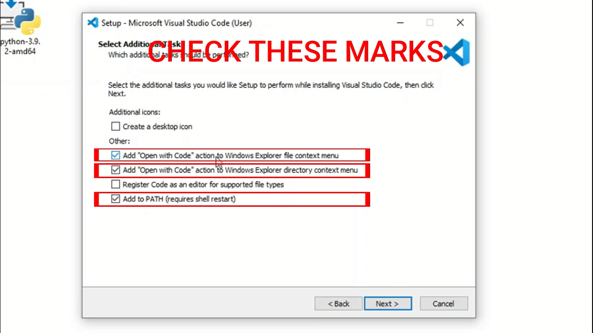

To run Python in your system, you have to install 2 things
1. Python Interpreter - which run our codes and gives output
2. Integreted Development Enviroment (IDE) - Which give us a good enviroment to write codes and decrease the efficient to our codes
In this course, we will use Visual Studio Code as a IDE
Open Your Web Browser
Search for python.org
Go to the Official website of Python.org
Go to all releases under Downloads Tab
Download the latest version
But Note that the latest version which is 3.9 can only run on windows 8, windows 8.1, windows 10
If you are using Windows 7 You can download python version 3.8 which can run on all the operationg System
Now We have to download Visual Studio Code
To download Visual Studio Code on your machine steps as follows :
Search for Visual Studio Code
Go to https://code.visualstudio.com
Website will automatically detect what operating system you are using you just have to click on Download
When all the Download wil complete you will see like this :
Now you have to install the Python Interpreter and IDE
To install simply first run the python setup
Check add to path option, so the operating system will find where was python installed on your system
Now click on Install Now, Python Interpreter would be install onto your system
Now Open Visual Studio Code Setup and install as follows :
Check license agreement
Click on Next
Click on Next
Click on Next
Check these option as shown here

Click on Next
Click on Install
Your Python Interpreter and Visual Studio Code has successfully Installed on your system
Now you have to download the python extension in Visual Studio Code to run Python in Visual Studio Code
To Download simply click on extension in Visual Studio Code
Search for Python
Click install